vLLM：基于 PagedAttention 的大语言模型高效内存管理
中文全文翻译
摘要
大语言模型的高吞吐服务要求一次batch足够多的请求。然而，每个请求的 KV cache 很大，且会动态增长与收缩；低效管理会造成碎片和重复存储，限制 batch size。论文提出受操作系统虚拟内存与分页启发的 PagedAttention，并在其上构建 vLLM，实现近乎零浪费的 KV cache 管理及请求内、请求间的灵活共享。在相近延迟下，vLLM 将常用 LLM 的吞吐提升 2-4 倍。
关键词：LLM serving；PagedAttention；KV cache；分页；continuous batching；内存共享
1 简介
大语言模型（LLMs）如GPT和PaLM的出现，催生了编程助手和通用聊天机器人等新应用，这些都开始深刻影响我们的工作和日常。许多云公司正竞相将这些应用作为托管服务提供。然而，运行这些应用成本非常高，需要大量硬件加速器，如 GPU。根据最新估计，处理LLM请求的成本可能比传统关键词查询高出10\(\times\) 。鉴于这些高成本，提高吞吐量——从而降低 LLM服务 系统每次请求的成本——变得更为重要。
LLMs的核心是一个自回归的Transformer模型。该模型根据输入（prompt）和之前生成的输出词序列，逐个生成单词（token）。对于每个请求，这一昂贵的过程会重复，直到模型输出终止token。这种顺序生成过程使工作负载受内存限制，未能充分发挥GPU的计算能力，限制了服务吞吐量。
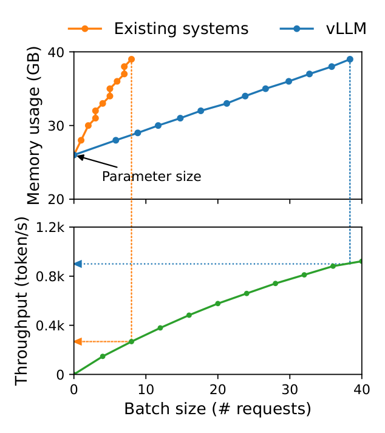
通过batch 处理多个请求，可以提高吞吐量。然而，要batch 处理大量请求，每个请求的内存空间应得到高效管理。例如，图 1 （左）展示了 NVIDIA A100 GPU 配备 40GB 内存的 13B 参数 LLM 内存分布。大约65%的内存分配给模型权重，这些权重在服务过程中保持静态。大约30%的内存用于存储请求的动态状态。对于Transformer，这些状态由与注意力机制相关的键值张量组成，通常称为 KV cache，代表早期token的上下文，按顺序生成新的输出token。剩余的少量内存用于其他数据，包括激活——即评估大语言模型时产生的短暂张量。由于模型权重恒定且激活仅占用GPU内存的一小部分，KV cache的管理对于确定最大batch大小至关重要。当管理效率低下时，KV cache内存会显著限制batch size，从而降低LLM的吞吐量，如图所示。1 （右）。
本文指出，现有的LLM服务系统未能高效管理KV cache内存。这主要是因为它们将请求的KV cache存储在连续的内存空间中，因为大多数深度学习框架要求张量存储在连续的内存中。然而，与传统深度学习工作负载中的张量不同，KV cache具有独特特性：随着模型生成新token，它会动态增长和缩小，且其寿命和长度事先未知。这些特性使现有系统的方法在两个方面显著低效：
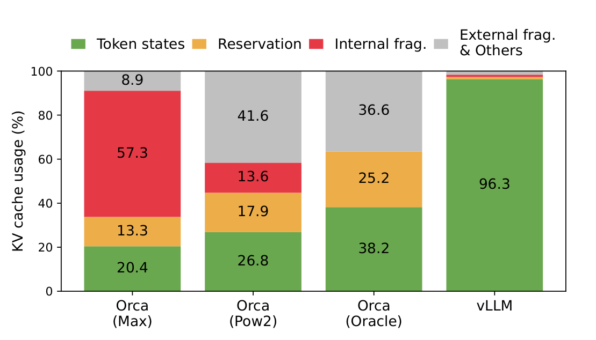
首先，现有系统存在内部和外部内存碎片化的问题。为了将请求的KV cache存储在连续空间，他们会 预先分配 一个连续的内存块，其最大长度（例如2048个token）。这可能导致严重的内部碎片化，因为请求的实际长度可能远短于最大长度（例如，图中11）。此外，即使实际长度事先已知，预分配仍然效率低下：由于整个块在请求生命周期内被保留，其他较短的请求无法利用当前未使用的块中的任何部分。此外，外部内存碎片化也可能显著，因为每个请求的预分配大小可能不同。事实上，我们的profiling 结果如下图 2 显示，只有 20.4% - 38.2% 的 KV 缓存内存用于存储现有系统的实际token状态。
其次，现有系统无法利用内存共享的机会。LLM服务通常使用先进的解码算法，如并行采样和束搜索，这些算法为每个请求生成多个输出。在这些情况下，请求由多个序列组成，这些序列可以部分共享它们的KV cache。然而，现有系统中无法实现内存共享，因为序列的KV cache存储在独立的连续空间中。
为解决上述局限性，我们提出了 PagedAttention算法，这一关注算法灵感来自操作系统（OS）关于内存碎片和共享的解决方案： 虚拟内存与分页。PagedAttention将请求的KV cache划分为多个块，每个块可以包含固定数量的token的注意键和值。在PagedAttention中，KV cache的块不一定存储在连续空间中。因此，我们可以像操作系统的虚拟内存一样更灵活地管理KV cache：可以把块看作页面，token看作字节，请求看作进程。这种设计通过使用相对较小的块并按需分配，缓解了内部碎片化。此外，它消除了外部碎片化，因为所有方块大小相同。最后，它允许在块的粒度范围内共享内存，跨越同一请求的不同序列，甚至跨不同请求。
在这项工作中，我们构建了 vLLM，这是一个基于PagedAttention的高吞吐量分布式LLM服务引擎，实现了KV cache内存近乎零浪费的效果。vLLM 采用块级内存管理和抢占式请求调度，这些与 PagedAttention 共同设计。vLLM 支持多种大小不一的流行大语言模型，如 GPT、OPT 和 LLaMA，包括超过单个 GPU 内存容量的模型。我们对各种模型和工作负载的评估显示，vLLM相比最先进的系统提升了2-4\(\times\) 的LLM服务吞吐量，且不影响模型准确性。随着更长的序列、更大的模型和更复杂的解码算法（§4.3），改进更加明显。总之，我们做出以下贡献：
我们识别了服务型大语言模型内存分配的挑战，并量化其对服务性能的影响。
我们提出了PagedAttention，这是一种基于存储在非连续分页内存中的KV cache的注意力算法，灵感来源于操作系统中的虚拟内存和分页。
我们设计并实现了vLLM，这是一个基于PagedAttention构建的分布式LLM服务引擎。
我们在不同场景下评估了vLLM，并证明其性能远超以往的先进解决方案，如FasterTransformer和Orca。
2 背景
本节介绍典型LLM的生成和服务过程，以及LLM服务中使用的迭代级调度。
2.1 基于Transformer的大语言模型
语言建模的任务是模拟一组词的概率 \((x_1, \ldots, x_n).\) 由于语言具有自然的顺序顺序，通常将整个序列上的联合概率分解为条件概率的乘积（即 自回归分解 ）： \[ P(x) = P(x_1) \cdot P(x_2\mid x_1) \cdots P(x_n \mid x_1, \ldots, x_{n-1}). \]
Transformer已成为大规模建模上述概率的事实标准架构。基于Transformer的语言模型最重要的组成部分是其 自注意力 层。对于输入的隐藏状态序列 \((x_1, \ldots, x_n) \in \mathbb{R}^{n\times d}\)，自注意层首先对每个位置 \(i\) 进行线性变换，以获得查询、键和值向量： \[ q_i = W_q x_i, \ k_i = W_k x_i, \ v_i = W_v x_i. \] 然后，自注意层通过将查询向量在某一位置与之前所有键向量相乘计算注意力得分 \(a_{ij}\) ，并计算输出 \(o_i\) 作为值向量上的加权平均值： \[ a_{ij} = \frac{\exp(q_i^\top k_j / \sqrt{d})}{\sum_{t=1}^{i}\exp(q_i^\top k_t / \sqrt{d})}, \ o_i = \sum_{j=1}^{i} a_{ij} v_j. \]
除了方程[eq：attention-layer]中的计算外，Transformer模型中的所有其他组成部分，包括嵌入层、前馈层、层归一化、残差连接、输出logit计算，以及方程[eq：qkv-transformation]中的查询、键和值变换，都以\(y_i = f(x_i).\)的形式独立按位置应用
2.2 LLM服务与自回归生成
一旦训练完成，LLM通常作为条件生成服务部署（例如完成API或聊天机器人）。向LLM服务请求时，会提供一份输入prompttoken的列表\((x_1, \ldots, x_n),\) LLM服务根据方程[eq：自回归分解]生成输出token列表\((x_{n+1}, \ldots, x_{n+T})\)。我们将prompt和输出列表的连接称为序列。
由于方程[eq：自回归分解]中的分解，LLM只能逐个采样和生成新token，每个新token的生成过程依赖于该序列中 所有之前的token ，特别是它们的键和值向量。在这种顺序生成过程中，现有token的密钥和值向量通常被缓存，用于生成未来的token，称为 KV cache。注意，一个token的KV cache依赖于其之前所有token。这意味着同一token在序列中不同位置出现时，其KV cache会不同。
给定请求prompt时，LLM服务中的生成计算可以分解为两个阶段：
prompt阶段 将整个用户prompt \((x_1, \ldots, x_n)\) 作为输入，计算第一个新token \(P(x_{n+1} \mid x_1, \ldots, x_{n})\)的概率。在此过程中，还生成key 向量 \(k_1, \ldots, k_n\) 和值向量 \(v_1, \ldots, v_n\)。由于prompt \(x_1, \ldots, x_n\) 已知，prompt相位的计算可以通过矩阵-矩阵乘法并行化。因此，这一阶段可以高效利用GPU固有的并行性。
自回归生成阶段按顺序生成剩余的新token。在迭代\(t\)时，模型接收一个token\(x_{n+t}\)作为输入，计算与key 向量\(k_1, \ldots, k_{n+t}\)和值向量\(v_1, \ldots, v_{n+t}\)的概率\(P(x_{n+t+1} \mid x_1, \ldots, x_{n+t})\)。注意，\(1\)到\(n + t - 1\)位置的键和值向量在之前的迭代中被缓存，这次迭代只计算新的键值向量\(k_{n+t}\)和\(v_{n+t}\)。该阶段在序列达到最大长度（由用户指定或由大语言模型限制）或序列结束（<eos>）token发出时完成。由于数据依赖性，不同迭代的计算无法并行化，通常使用矩阵-向量乘法，效率较低。因此，这一阶段严重低估了GPU的计算，并且会被内存占用，承担了单个请求大部分的延迟。
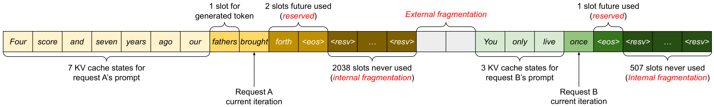
2.3 LLM的batch技术
通过batch 处理多个请求，可以提高服务LLM的计算利用率。由于请求共享相同的模型权重，移动权重的开销会在batch中摊销到各个请求之间，当batch规模足够大时，计算开销可能会被压倒。然而，batch 处理请求到LLM服务并非简单，原因有两个。首先，请求可能在不同时间到达。一种简单的batch策略要么让较早的请求等待后续的请求，要么延迟接收请求直到之前的请求结束，导致排队严重延迟。其次，请求的输入和输出长度可能差异很大（见图 11）。一种简单的batch技术会填充请求的输入和输出以平衡它们的长度，从而浪费GPU的计算和内存。
为解决这一问题，提出了细粒度batch机制，如细胞调度和迭代级调度。与传统在请求层面工作的方法不同，这些技术在迭代层面工作。每次迭代后，已完成的请求会从batch中移除，并添加新的请求。因此，新的请求可以在等待单次迭代后处理，而不必等待整个batch完成。此外，借助特殊的GPU核，这些技术消除了输入和输出填充的需求。通过减少队列延迟和填充带来的低效，细粒度batch机制显著提高了LLM服务的吞吐量。
3 LLM服务中的内存挑战
虽然细粒度batch减少了计算浪费，并使请求能够更灵活地batch，但可batch 处理的请求数量仍受限于GPU内存容量，尤其是存储KV cache的空间。换句话说，服务系统的吞吐量是 受内存限制的。克服内存限制需要解决内存管理中的以下挑战：
大型KV cache。 KV cache大小随着请求数量的增加而迅速增长。例如，对于13B参数OPT模型，单个token的KV cache需要800 KB空间，计算方式为 \(2\) （键和值向量） \(\times\ 5120\) （隐藏状态大小） \(\times \ 40\) （层数） \(\times \ 2\) （每个FP16字节数）。由于 OPT 最多可生成 2048 个token的序列，存储单个请求的 KV 缓存所需的内存可高达 1.6 GB。并发GPU的内存容量可达数十GB。即使所有可用内存都分配到KV cache，也只能容纳几十个请求。此外，低效的内存管理还可能进一步减少batch大小，如图所示。2. 此外，鉴于当前趋势，GPU的计算速度增长速度快于内存容量。例如，从 NVIDIA A100 到 H100，FLOPS 增加了超过两倍，但 GPU 内存最大仍保持在 80GB。因此，我们认为记忆将成为越来越重要的瓶颈。
复杂的解码算法。 LLM服务为用户提供了多种解码算法，每种算法对内存管理复杂度都有不同影响。例如，当用户从单一输入prompt请求多个随机样本时，在程序建议中典型的用例是，prompt部分的KV cache（占我们实验中占KV cache总量的12%）（§6.3）可以共享以最小化内存使用。另一方面，由于采样结果不同且依赖上下文和位置，KV cache在自回归生成阶段应保持不共享。KV cache共享的程度取决于所采用的具体解码算法。在更复杂的算法如束搜索中，不同的请求束可以共享其KV cache的更大部分（最高可节省55%的内存，见§6.3），并且随着解码过程的推进，共享模式会不断演变。
对未知输入和输出长度进行调度。对LLM服务的请求在输入和输出长度上存在变化。这要求内存管理系统能够支持各种prompt时长的范围。此外，随着解码时请求的输出长度增加，其KV cache所需的内存也会增加，可能会耗尽用于接收请求或当前prompt的持续生成的可用内存。系统需要做出调度决策，比如删除或替换部分 GPU 内存中的 KV 缓存。
3.1 现有系统中的内存管理
由于当前深度学习框架中的大多数操作符要求张量存储在连续内存中，之前的LLM服务系统也会将同一请求的KV cache作为跨位置的连续张量存储。由于LLM的输出长度不可预测，它们会根据请求的最大可能序列长度静态分配内存块，而不考虑实际输入或最终输出长度。
图 3 表示两个请求：请求 A 最大可能序列长度为 2048 和请求 B，最大长度为 512。现有系统中的块预分配方案主要有三个内存浪费来源：为未来token 保留 的槽位、因为潜在最大序列长度过度配置导致 的内部碎片 ，以及内存分配器（如伙伴分配器）的 外部碎片 。外部碎片永远不会用于生成的token，这一点在发送请求前就已知晓。内部碎片化也未被使用，但只有在请求完成采样后才会实现。它们都是纯粹的内存浪费。虽然预留内存最终会被使用，但保留该空间直到整个请求持续时间，尤其是在预留空间较大时，会占用本可用于处理其他请求的空间。我们在图中可视化了实验中内存浪费的平均百分比。2，揭示之前系统实际有效内存可能低至20.4%。
尽管压缩被提出作为解决分片的潜在解决方案，但在性能敏感的大语言模型服务系统中执行压缩由于KV cache庞大而不切实际。即使采用压缩，每个请求预先分配的块空间也阻止了现有内存管理系统中特定于解码算法的内存共享。
4 方法
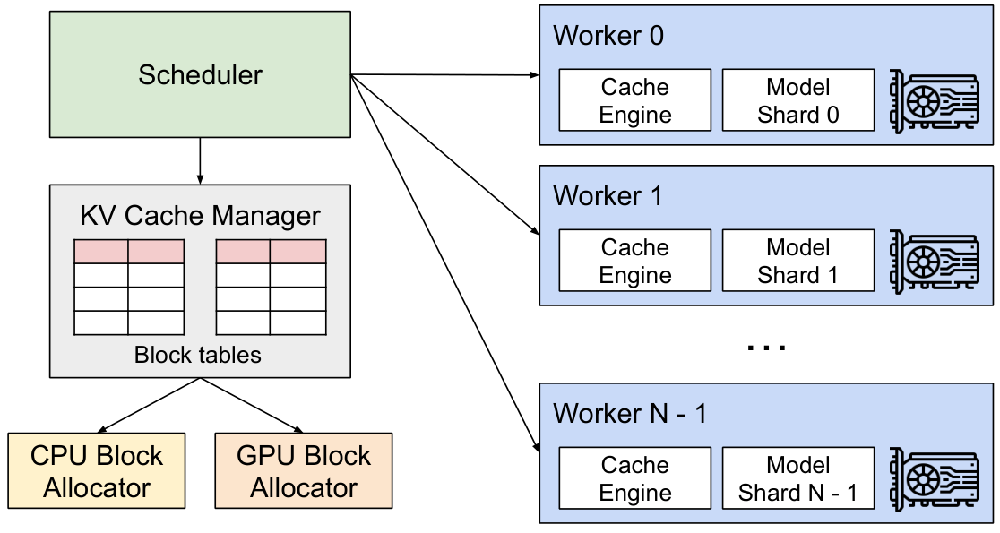
在本研究中，我们开发了一个新的注意力算法 PagedAttention，并构建了一个大语言模型服务引擎 vLLM，以应对第3节中提出的挑战。vLLM的架构如图所示。4. vLLM 采用集中调度器来协调分布式 GPU 工作单元的执行。 KV cache管理器 实际上以分页方式管理KV cache，由PagedAttention支持。具体来说，KV cache管理器通过集中调度器发送的指令管理GPUworker上的物理KV cache内存。
接下来，我们将在第4.1节描述PagedAttention算法。在此，我们展示了 §4.2 中 KV 缓存管理器的设计，以及 §4.3 中如何促进 PagedAttention。随后，我们展示了该设计如何促进各种解码方法的有效内存管理（§4.4），并处理可变长度的输入和输出序列（§4.5）。最后，我们展示了vLLM系统设计在分布式环境中的工作原理（§4.6）。
4.1 PagedAttention
为了解决第3节中的内存挑战，我们引入 了PagedAttention，这是一种受操作系统中经典 分页 理念启发的注意力算法。与传统的注意力算法不同，PagedAttention允许在非连续的内存空间中存储连续的键和值。具体来说，PagedAttention将每个序列的KV cache划分为 KV块。每个块包含固定数量的token的键和值向量，我们 记作 KV 块大小 （\(B\)）。表示关键块 \(K_j = (k_{(j - 1) B + 1}, \ldots, k_{jB})\) 和值块 \(V_j = (v_{(j - 1) B + 1}, \ldots, v_{jB}).\) 在方程 相应公式 中的注意力计算可以转换为以下按块计算： \[ A_{ij} = \frac{\exp(q_i^\top K_j / \sqrt{d})}{\sum_{t=1}^{\lceil i/B \rceil}\exp(q_i^\top K_t\mathbf{1} / \sqrt{d})}, \ o_i = \sum_{j=1}^{\lceil i/B \rceil} V_j A_{ij}^\top, \] 其中 \(A_{ij} = (a_{i,(j - 1) B + 1}, \ldots, a_{i,jB})\) 是第 \(j\) KV 块上的注意力分数行向量。
在注意力计算过程中，PagedAttention内核分别识别并获取不同的KV块。我们在图中展示了PagedAttention的示例。5：键和值向量分布在三个块上，且这三个块在物理内存上不相连。每次，核将查询向量\(q_i\)“第四”和块\(K_j\)的key 向量乘以计算注意力得分\(A_{ij},\)，随后再乘以\(A_{ij}\)块\(V_j\)的值向量，推导出最终注意力输出\(o_i.\)
总之，PagedAttention算法允许KV块存储在非连续的物理内存中，这使得vLLM中的分页内存管理更加灵活。
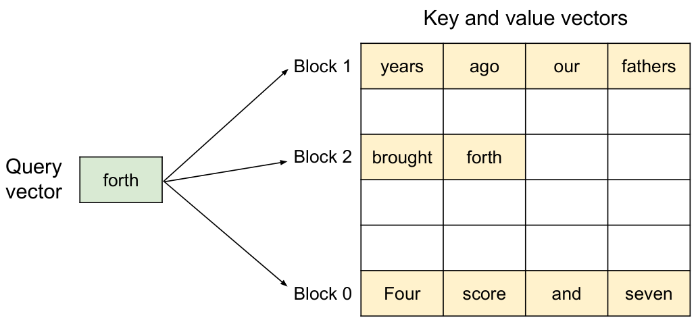
4.2 KV cache管理器
vLLM 内存管理器的核心理念类似于操作系统中的 虚拟内存 。操作系统将内存划分为固定大小的 页面 ，并将用户程序的逻辑页面映射到物理页面。连续的逻辑页可以对应非连续的物理内存页，使用户程序能够像访问连续内存一样访问内存。此外，物理内存空间无需事先完全预留，使操作系统能够根据需要动态分配物理页面。vLLM 利用虚拟内存背后的理念来管理 LLM 服务中的 KV 缓存。借助PagedAttention，我们将KV cache组织为固定大小的KV块，类似于虚拟内存中的页面。
请求的 KV 缓存以一系列 逻辑 KV 块表示，随着新token及其 KV 缓存的生成，从左到右填充。最后一个KV块的空缺职位将保留给未来世代。在GPU工作单元上， 块引擎 分配一个连续的GPU DRAM块并将其分割成 物理KV块 （CPU内存也用于交换;见§4.5）。 KV块管理器 还维护 块表——即每个请求的逻辑与物理KV块之间的映射。每个块表条目记录逻辑块对应的物理块和已填充位置数。将逻辑和物理 KV 块分离，使 vLLM 能够动态扩展 KV 缓存内存，而无需提前为所有位置预留，这消除了现有系统中的大部分内存浪费，如图所示。2.
4.3 使用 PagedAttention 和 vLLM 进行解码
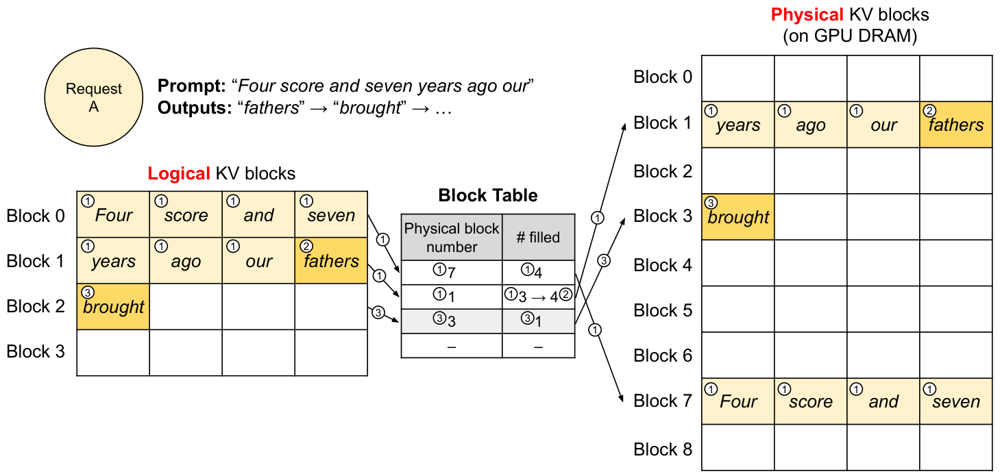
接下来，我们带你来一个例子，如图所示。6，演示 vLLM 如何执行 PagedAttention 并管理单个输入序列的解码过程中的内存：1⃝ 与操作系统的虚拟内存一样，vLLM 最初不需要为生成的最大序列长度保留内存。相反，它只保留必要的KV块，以容纳在prompt计算过程中生成的KV cache。在这种情况下，prompt有7个token，因此vLLM将前两个逻辑KV块（0和1）映射到2个物理KV块（分别为7和1）。在prefill步骤中，vLLM生成prompt的KV cache和第一个输出token，使用传统的自注意算法（例如）。vLLM随后将前4个token的KV cache存储在逻辑块0，后面3个token存储在逻辑块1。剩余的槽位保留给后续的自回归生成阶段。2⃝ 在第一个自回归解码步骤中，vLLM 在物理块 7 和 1 上用 PagedAttention 算法生成新token。由于最后一个逻辑块中仍有一个槽可用，新生成的KV cache会存储在那里，块表的 #filled 记录也会被更新。3⃝ 在第二步解码时，当最后一个逻辑块满时，vLLM 会将新生成的 KV 缓存存储到新的逻辑块中;vLLM 为它分配一个新的物理块（物理块 3），并将该映射存储在块表中。
在全球范围内，每次decode iteration，vLLM 首先选择一组候选序列进行batch（详见第4.5节），并为新要求的逻辑块分配物理块。然后，vLLM 将当前迭代的所有输入token（即prompt阶段请求的所有token和生成阶段请求的最新token）串接为一个序列，并输入到大语言模型中。在LLM计算过程中，vLLM使用PagedAttention内核访问之前以逻辑KV块形式存储的KV cache，并将新生成的KV cache保存到物理KV块中。在一个KV块（块大小>1）中存储多个token，使PagedAttention内核能够并行处理更多位置的KV cache，从而提高硬件利用率并降低延迟。然而，更大的块大小也会增加内存碎片化。我们在第7.2节研究块大小的影响。
同样，vLLM会随着更多token及其KV cache的生成，动态地将新的物理块分配给逻辑块。由于所有块从左到右填充，且只有当之前所有块都满时才分配新的物理块，vLLM 将请求的所有内存浪费限制在一个块内，从而有效利用所有内存，如图所示。2. 这使得更多请求能够容纳到内存中进行batch——从而提升吞吐量。请求生成完成后，其 KV 块可以被释放，用于存储其他请求的 KV 缓存。见图 7，我们展示了vLLM管理两个序列内存的示例。这两个序列的逻辑块在 GPU 工作单元中块引擎保留的空间内映射到不同的物理块。两个序列的相邻逻辑块不必在物理GPU内存中相连，物理块的空间可以被两个序列有效利用。
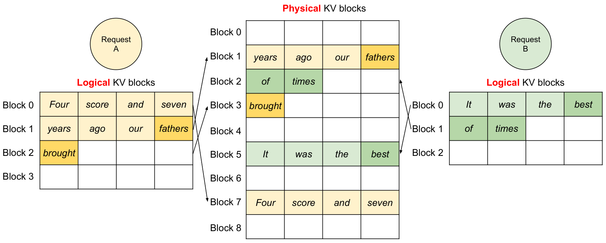
4.4 在其他解码场景中的应用
§4.3 展示了PagedAttention和vLLM如何处理基本解码算法，如贪婪解码和采样，这些算法接收一个用户prompt作为输入并生成单一输出序列。在许多成功的LLM应用中，LLM服务必须提供更复杂的解码场景，这些场景具有复杂的访问模式，并有更多内存共享的机会。本节展示了vLLM在这些问题上的普遍适用性。
并行采样。 在基于LLM的程序助手中，LLM为单个输入prompt生成多个采样输出;用户可以从不同的候选输出中选择一个最爱输出。到目前为止，我们隐含地假设请求生成的只有一个序列。本文剩余部分假设更一般的情况，即请求生成多个序列。在并行采样中，一个请求包含多个共享相同输入prompt的样本，从而允许共享prompt的KV cache。通过其PagedAttention和分页内存管理，vLLM 可以轻松实现这种共享并节省内存。
图 8 展示了两个输出的并行解码示例。由于两个输出共享同一prompt，我们只在prompt阶段为prompt状态的一份保留空间;两个序列prompt的逻辑块映射到相同的物理块：两个序列的逻辑块0和1分别映射到物理块7和1。由于单个物理块可以映射到多个逻辑块，我们为每个物理块引入 了引用计数 。在这种情况下，物理块7和1的引用计数都是2。在生成阶段，两个输出采样不同的输出token，需要为KV cache单独存储。vLLM 在块粒度上实现了需要多序列修改的物理块的 写时复制 机制，类似于操作系统虚拟内存中的写时复制技术（例如分支进程时）。具体来说，在图中。8，当样本A1需要写入其最后一个逻辑块（逻辑块1）时，vLLM识别对应物理块（物理块1）的引用计数大于1;它分配一个新的物理块（物理块3），指示块引擎复制物理块1的信息，并将引用计数减少到1。接下来，当样本A2写入物理块1时，引用计数已减少为1;因此，A2 直接将其新生成的 KV 缓存写入物理块 1。
总之，vLLM 允许在多个输出样本中共享大部分用于存储prompt KV 缓存的空间，唯独最后一个逻辑块由写时复制机制管理。通过在多个采样间共享物理块，可以大幅降低内存使用，尤其是在 长输入prompt时。
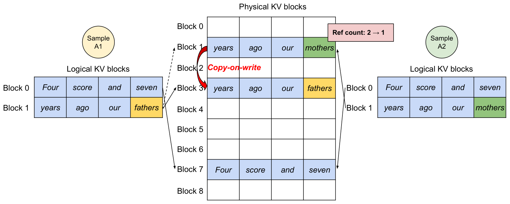
束搜索。在机器翻译等LLM任务中，用户期望LLM输出的最高\(k\)最合适的翻译。束搜索被广泛用于解码LLM最可能的输出序列，因为它降低了完全遍历样本空间的计算复杂性。该算法依赖于光束宽度参数\(k\)，该参数决定了每一步保留的顶尖候选序列数。在解码过程中，束搜索通过考虑所有可能的token来扩展每个候选序列，利用大语言模型计算它们的概率，并保留\(k \cdot |V|\)候选序列中最可能的前\(k\)序列，其中\(|V|\)为词汇量。
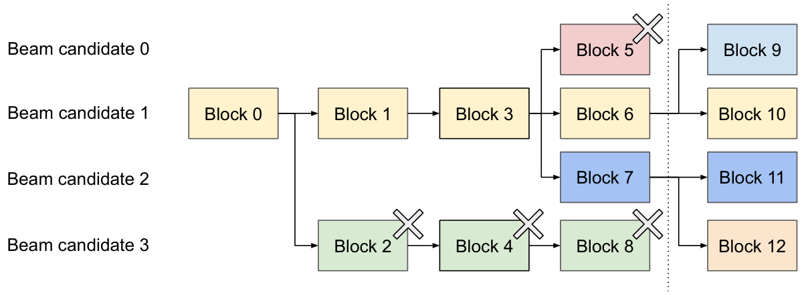
与并行解码不同，束搜索设施不仅共享初始prompt块，还能在不同候选对象间共享其他代码块，且共享模式会随着解码过程的推进动态变化，类似于操作系统中由复合分支创建的进程树。图 9 展示了vLLM如何管理一个束搜索示例中的KV块， \(k = 4\)。在以虚线表示的迭代之前，每个候选序列使用了4个完整的逻辑块。所有光束候选者共享第一个块0（即prompt）。候选序列3与第二批其他人题外话。0-2的候选序列共用前三个块，并在第四个块分道扬镳。在后续的版本中，前4名可能的候选序列均来自候选序列1和2。由于原始候选 0 和 3 不再是顶候选，其逻辑块被释放，对应物理块的引用计数减少。vLLM 释放所有引用计数为 0 的物理块（块 2、4、5、8）。然后，vLLM 分配新的物理块（块 9-12）来存储来自新候选的 KV 缓存。现在，所有候选序列共用第0、1、3块;0号和1号候选序列共用第6号块，2号和3号候选序列进一步共享第7号块。
以往的LLM服务系统要求在beam 候选节点上频繁备份KV cache的内存副本。例如，在图中所示的情况。9，虚线之后，候选序列3需要复制候选序列2的大部分KV cache以继续生成。这种频繁的内存复制开销通过 vLLM 的物理块共享大大减少。在vLLM中，大多数不同光束候选块可以共享。写时复制机制仅在新生成的token位于旧共享块内时应用，如并行解码。这只涉及复制一个数据块。
共享前缀。 通常，LLM用户会提供任务的（长篇）描述，包括指令和示例输入输出，也称为 系统prompt 。描述与实际任务输入串联，形成请求的prompt。LLM根据完整prompt生成输出。图 10 是一个例子。此外，共享前缀还可以通过prompt工程进一步调整，以提高下游任务的准确性。
对于这类应用，许多用户prompt共享一个前缀，因此LLM服务提供商可以提前存储该前缀的KV cache，以减少前缀上的冗余计算。在 vLLM 中，可以通过为 LLM 服务提供商预定义的共享前缀预留一组物理块来方便地实现，就像操作系统处理跨进程共享库一样。带有共享前缀的用户输入prompt可以简单地将其逻辑块映射到缓存的物理块（最后一个块token为写时复制）。prompt阶段的计算只需在用户的任务输入时执行。
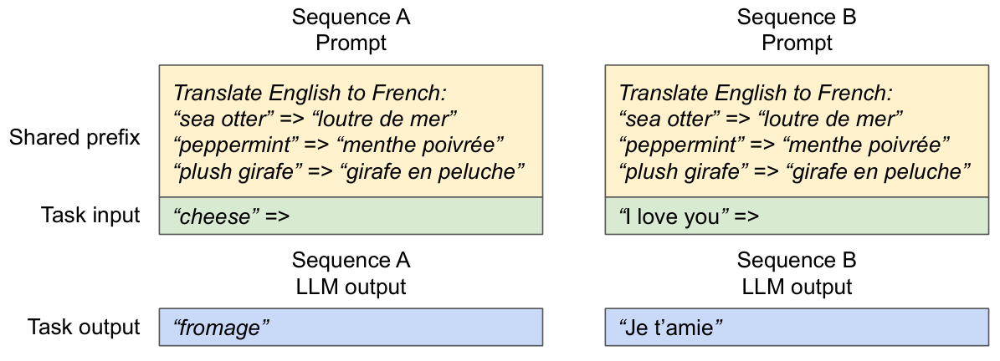
混合解码方法。 前述解码方法表现出多样的内存共享和访问模式。尽管如此，vLLM能够同时处理具有不同解码偏好的请求，而现有系统 无法 高效实现这一点。这是因为vLLM通过一个通用映射层隐藏了不同序列之间复杂的内存共享，该映射层将逻辑块转换为物理块。LLM及其执行内核只看到每个序列的物理块ID列表，无需处理序列间的共享模式。与现有系统相比，这种方法拓宽了不同采样需求的batch机会，最终提高了系统的整体吞吐量。
4.5 调度与优先
当请求流量超过系统容量时，vLLM必须优先处理部分请求。在vLLM中，我们采用先到先得（FCFS）调度策略，确保公平并防止饥饿。当vLLM需要抢占请求时，它确保最早到达的请求先被送达，最新的请求先被抢占。
LLM服务面临一个独特挑战：LLM的输入prompt长度可能差异显著，且最终输出长度事先未知，这取决于输入prompt和模型。随着请求数量及其输出的增加，vLLM 可能会用尽 GPU 的物理块来存储新生成的 KV 缓存。vLLM 需要回答两个经典问题：（1）应该驱逐哪些块？（2）如果需要，如何恢复被驱逐的block？通常，驱逐政策会利用启发式方法预测未来最远会访问哪个块，并对该块进行驱逐。由于我们知道序列中的所有块都被同时访问，我们实现了全有或全无的驱逐策略，即要么全部驱逐序列中的块，要么全部不驱逐。此外，同一请求中的多个序列（例如同一束搜索请求中的束候选）会作为 序列组进行群调度。同一序列组内的序列总是被抢占或重新调度，因为这些序列之间可能存在内存共享。为了回答第二个问题——如何恢复被驱逐的块，我们考虑两种技术：
交换。 这是大多数虚拟内存实现采用的经典技术，它们将被驱逐的页面复制到磁盘上的交换空间。在我们的情况下，我们会把被驱逐的块复制到CPU内存。如图所示。除了GPU块分配器外，vLLM还包含一个CPU块分配器，用于管理交换到CPU内存的物理块。当vLLM耗尽新token的空闲物理块时，会选择一组序列进行驱逐并将其KV cache传输到CPU。一旦它抢占了某个序列并逐出了该块，vLLM 就停止接受新请求，直到所有被抢占的序列都完成。请求完成后，其块会从内存中释放，被抢占序列的块会被重新带回，继续该序列的处理。注意，在这种设计下，CPU内存中交换的块数永远不会超过GPU内存的物理块总数，因此CPU内存上的交换空间受KV cache分配的GPU内存限制。
重新计算。 在这种情况下，当被抢占序列重新调度时，我们只需重新计算KV cache。注意，重计算延迟可能显著低于原始延迟，因为解码时生成的token可以与原始用户prompt串接成新prompt——它们在所有位置的KV cache可以在一次prompt阶段迭代中生成。
交换和重计算的性能取决于CPU内存与GPU内存之间的带宽以及GPU的计算能力。我们在第7.3节中探讨了交换和重计算的速度。
4.6 分布式执行
许多大语言模型的参数大小超过单个GPU的容量。因此，有必要将它们划分到分布式 GPU，并以模型并行方式执行。这需要一个能够处理分布式内存的内存管理器。vLLM在分布式环境中有效，支持广泛使用的Megatron-LM风格张量模型并行策略。该策略遵循SPMD（单程序多数据）执行计划，线性层被划分以执行分块矩阵乘法，GPU通过全约简操作持续同步中间结果。具体来说，注意力算子在注意力头维度上被拆分，每个SPMD过程处理多头注意力中的一部分注意力头。
我们观察到，即使采用模型并行执行，每个模型分片仍然处理相同的输入token集，因此需要KV cache以匹配相同位置。因此，vLLM 在集中调度器中包含一个单一的 KV 缓存管理器，如图所示。4. 不同的GPUworker共享管理器，以及逻辑块到物理块之间的映射。这种通用映射允许GPUworker使用调度器为每个输入请求提供的物理块执行模型。虽然每个GPUworker拥有相同的物理块ID，但worker只存储其对应注意力头的部分KV cache。
在每一步中，调度器首先准备包含batch中每个请求的输入tokenID以及每个请求的块表的消息。接下来，调度器将该控制消息广播给GPUworker。然后，GPUworker开始用输入tokenID执行模型。在注意力层，GPUworker根据控制消息中的块表读取KV cache。执行过程中，GPUworker将中间结果与全约简通信原语同步，无需调度器协调，如 。最终，GPUworker会将本次迭代的采样token返回调度器。总之，GPUworker无需在内存管理上同步，因为他们只需在每次decode iteration开始时接收所有内存管理信息及步进输入。
5 实现
vLLM 是一个端到端的服务系统，拥有 FastAPI 前端和基于 GPU 的推理引擎。前端扩展了 OpenAI API 接口，允许用户为每个请求自定义采样参数，如最大序列长度和波束宽度 \(k\)。vLLM 引擎使用 8.5K 行 Python 和 2K 行 C++/CUDA 代码编写。我们开发与控制相关的组件，包括调度器和 Python 块管理器，同时为关键操作如 PagedAttention 开发定制 CUDA 内核。对于模型执行者，我们使用PyTorch和Transformers实现了GPT、OPT和LLaMA等流行的LLMs。我们使用 NCCL 进行分布式 GPU worker之间的张量通信。
5.1 内核级优化
由于PagedAttention引入了现有系统无法高效支持的内存访问模式，我们开发了多个GPU内核来优化它。（1） 熔融重塑和块状写字。 在每个Transformer层，新的KV cache被拆分成块，重新设计为适合块读取优化的内存布局，然后保存在块表指定的位置。为了最小化内核启动开销，我们将它们融合到一个内核中。（2） 融合积木阅读与注意力。 我们会调整FasterTransformer中的注意力内核，根据块表读取KV cache并实时执行注意力操作。为了确保内存访问的整合，我们为每个块分配一个GPU的Warp。此外，我们还支持请求批内的可变序列长度。（3） 熔断块副本。 由写时复制机制发出的块复制操作，可以作用于不连续的块。如果使用 cudaMemcpyAsync 该 API，这可能导致大量调用小型数据移动。为了减轻开销，我们实现了一个内核，将不同块的复制操作batch 处理到一次内核启动中。
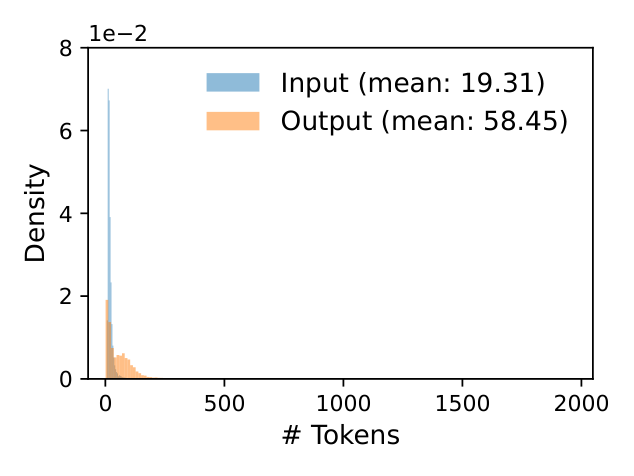
5.2 支持各种解码算法
vLLM 采用三种关键方法实现各种解码算法： fork、 append和 free。该 fork 方法从已有序列中创建新序列。该 append 方法会在序列中附加一个新的token。最后，该 free 方法删除了该序列。例如，在并行采样中，vLLM利用该 fork 方法从单个输入序列生成多个输出序列。然后在每次迭代中 append添加新的token，并用 删除满足停止条件 free的序列。同样的策略也应用于 vLLM 的束搜索和前缀共享。我们相信，结合这些方法，未来的解码算法也能得到支持。
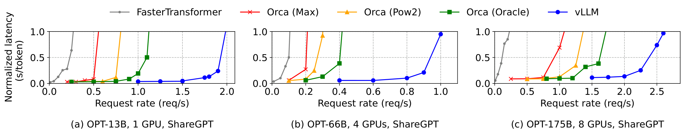
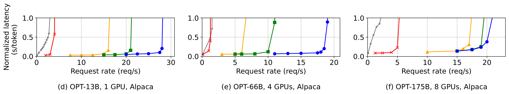
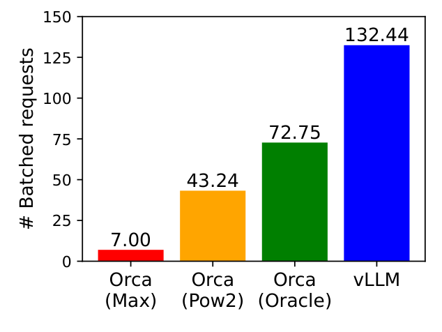
6 实验评估
在本节中，我们将评估vLLM在多种工作负载下的表现。
6.1 实验装置
模型和服务器配置。我们使用13B、66B和175B参数的OPT模型，以及13B参数的LLaMA模型进行评估。13B和66B是LLM中常见的大小，如大语言模型排行榜所示，而175B则是著名的GPT-3模型大小。在所有实验中，我们都使用带NVIDIA A100 GPU的A2实例，运行在Google Cloud Platform上。详细模型尺寸和服务器配置见表 相应表格。
工作量。 我们综合基于ShareGPT和Alpaca数据集的工作负载，这些数据集包含真实大语言模型服务的输入和输出文本。ShareGPT 数据集是与 ChatGPT 共享的对话集合。Alpaca数据集是由GPT-3.5生成的指令数据集，带有自我指令。我们对数据集进行分级化，并利用它们的输入和输出长度来综合客户端请求。如图所示。11，ShareGPT数据集的平均输入prompt比Alpaca数据集长8.4\(\times\) ，输出长5.8\(\times\) ，方差更大。由于这些数据集不包含时间戳，我们使用泊松分布生成请求到达时间，且请求率不同。
基线1：FasterTransformer。 FasterTransformer 是一款高度优化延迟的分布式推理引擎。由于 FasterTransformer 没有自己的调度器，我们实现了一个带有动态batch机制的自定义调度器，类似于现有的服务系统如 Triton 。具体来说，我们根据GPU内存容量，为每个实验设定了最大batch大小 \(B\) 尽可能大。调度器接收最多 \(B\) 个最早到达的请求，并将batch发送给 FasterTransformer 进行处理。
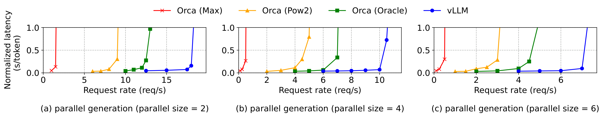
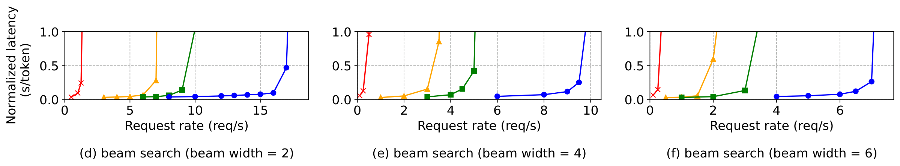
基线2：Orca。 Orca 是一个最先进的大语言模型服务系统，优化了吞吐量。由于Orca不公开使用，我们实现了自己的Orca版本。我们假设Orca使用伙伴分配算法来确定存储KV cache的内存地址。我们根据Orca对请求输出空间的过度保留程度，实现了三个版本：
Orca（Oracle）。 我们假设系统知道实际生成的请求输出长度。这显示了Orca的上界性能，而在实际操作中实现这一性能是不可行的。
Orca（Pow2）。 我们假设系统最多会为输出预留空间2\(\times\)。例如，如果真实输出长度为25，则为输出保留32个位置。
Orca（Max）。 我们假设系统总是保留模型最大序列长度的空间，即2048个token。
关键指标。 我们专注于服务吞吐量。具体来说，利用不同请求率的工作负载，我们测量系统的 归一化延迟 ，即每个请求端到端延迟的平均值除以其输出长度，如 Orca 所示。高吞吐量的服务系统应保持低标准化延迟以应对高请求率。对于大多数实验，我们评估系统时段为1小时。作为例外，由于成本限制，我们对OPT-175B型号使用15分钟trace。
6.2 基本抽样
我们通过基本抽样（每个请求一个样本）评估vLLM在三个模型和两个数据集上的表现。图的第一排。12 显示了 ShareGPT 数据集的结果。曲线说明，随着请求速率的增加，延迟最初会逐渐增加，但随后突然爆炸式增长。这可以归因于当请求速率超过服务系统容量时，队列长度会无限增长，请求的延迟也会随之增加。
在ShareGPT数据集上，vLLM的请求率比Orca（Oracle）高 \(1.7\times\)–\(2.7\times\) ，比Orca（Max）高 \(2.7\times\)–\(8\times\) ，同时保持相似的延迟。这是因为 vLLM 的 PagedAttention 能够高效管理内存使用，从而使batch比 Orca 更多的请求成为可能。例如，如图所示。13，对于 OPT-13B vLLM 来说，同时处理的请求 \(2.2\times\) 比 Orca（Oracle）多， \(4.3\times\) 比 Orca（Max）更多的请求。与 FasterTransformer 相比，vLLM 可承受 \(22\times\) 更高的请求速率，因为 FasterTransformer 不采用细粒度调度机制，且内存管理效率低，类似 Orca（Max）。
图的第二排。12 号和图 15 展示了Alpaca数据集的结果，其趋势与 ShareGPT 数据集相似。一个例外是图 12 （f），其中vLLM相较于Orca（Oracle）和Orca（Pow2）的优势较小。这是因为OPT-175B的模型和服务器配置（表[表：model_config]）允许GPU内存大容量存储KV cache，而Alpaca数据集的序列较短。在这种设置下，Orca（Oracle）和Orca（Pow2）也能batch 处理大量请求，尽管内存管理效率较低。因此，系统性能受计算限制，而非内存受限。
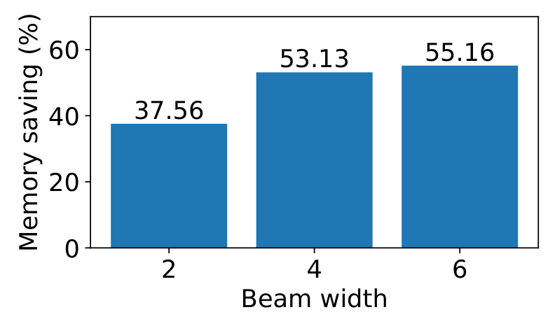
6.3 并行采样与束搜索
我们通过两种常用抽样方法——并行采样和束搜索——评估了PagedAttention内存共享的有效性。在并行采样中，请求中的所有并行序列都可以共享prompt的KV cache。如图的第一排所示。16，随着可采样序列数量增加，vLLM相较Orca基线带来了更多改进。同样，Fig的第二排。16 显示了不同波束宽度下的束搜索结果。由于波束搜索允许更多共享，vLLM展现出更大的性能优势。vLLM在OPT-13B和Alpaca数据集上的改进从基础采样的 \(1.3 \times\) 提升到宽度为 6 的束搜索 \(2.3 \times\) 。
图 17 绘制了节省内存的数量，计算方法为通过共享保存的块数除以未共享的总块数。我们显示并行采样节省了6.1%至9.8%的内存，而在束搜索中节省了37.6%至55.2%。在同一实验中，ShareGPT数据集显示，平行采样节省了16.2%至30.5%的内存，而在束搜索中节省了44.3%至66.3%。
6.4 共享前缀
我们探讨vLLM在不同输入prompt共享的情况下的有效性，如图所示。10. 模型中，我们使用 LLaMA-13B ，它是多语言的。工作负载方面，我们使用 WMT16 英德翻译数据集，并综合两个前缀，包含一个指令和几个翻译示例。第一个前缀包含一个示例（即单次事件），另一个前缀包含5个示例（即少数事件）。如图所示。18 （a）， vLLM 在共享一次性前缀时，吞吐量 \(1.67 \times\) 高于 Orca（Oracle）。此外，当分享更多例子时（见图）。18 （b）），vLLM 的吞吐量 \(3.58 \times\) 高于 Orca（Oracle）。
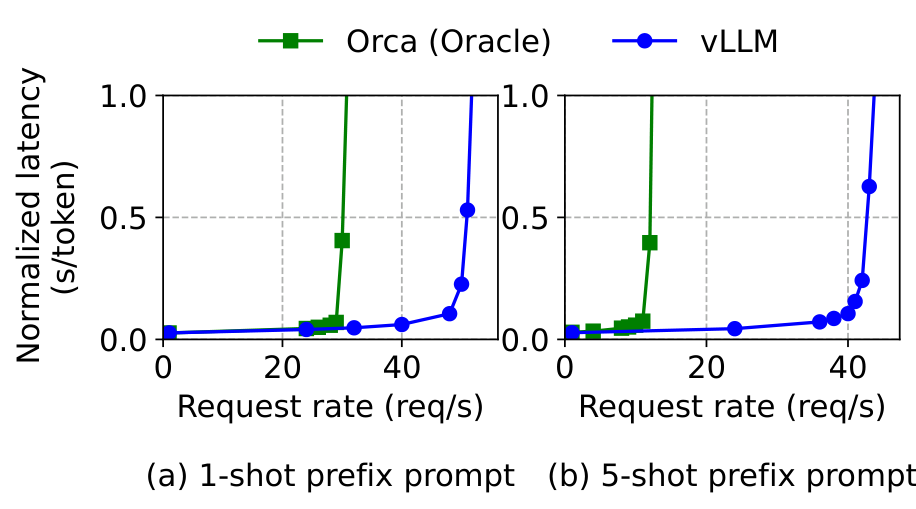
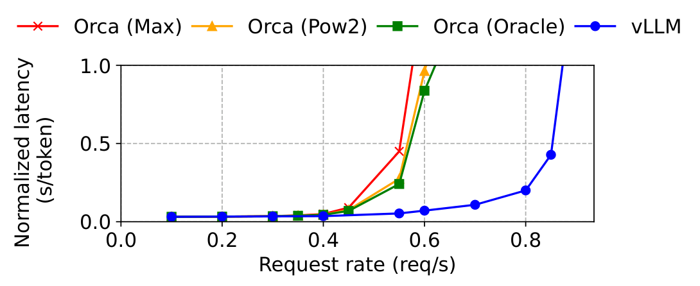
6.5 聊天机器人
聊天机器人是大语言模型最重要的应用之一。为了实现聊天机器人，我们让模型通过将聊天历史和最后用户查询串联到prompt中生成回复。我们利用ShareGPT数据集综合聊天历史和用户查询。由于OPT-13B模型的上下文长度有限，我们将prompt剪辑到最后1024个词，并让模型生成最多1024个词。我们不会在不同对话轮之间存储KV cache，因为这样做会占用其他会话轮之间的请求空间。
图 19 显示 vLLM 相较于三个 Orca 基线 \(2\times\) 能维持更高的请求率。由于ShareGPT数据集包含许多长对话，大多数请求的输入prompt包含1024个token。由于伙伴分配算法，Orca基线为请求输出保留了1024个token空间，无论它们如何预测输出长度。因此，Orca的三个基线表现相似。相比之下，vLLM 能够有效处理长prompt，因为 PagedAttention 解决了内存碎片和保留问题。
7 消融研究
本节将研究vLLM的各个方面，并评估消融实验中所做出的设计选择。
7.1 内核微基准测试
PagedAttention 中的动态块映射会影响涉及存储 KV 缓存的 GPU 操作的性能，即块读写和注意力。与现有系统相比，我们的GPU内核（§5）涉及访问块表、执行额外分支和处理可变序列长度的额外开销。如图所示。20，这使得注意力核心延迟比高度优化的FasterTransformer实现高出20–26%。我们认为开销较小，因为它只影响模型中的注意力算符，而不影响模型中的其他算符，如线性算符。尽管开销较大，PagedAttention使vLLM在端到端性能上显著优于FasterTransformer（§6）。
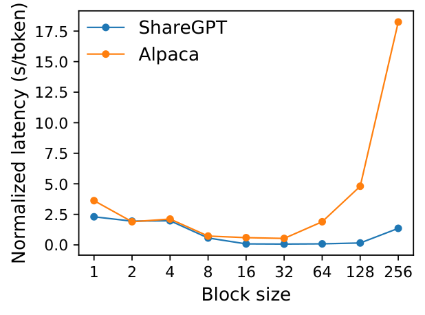
7.2 块大小的影响
块大小的选择会对vLLM的性能产生重大影响。如果块大小过小，vLLM可能无法充分利用GPU的并行性来读取和处理KV cache。如果块大小过大，内部碎片增加，共享概率降低。
见图 22，我们利用ShareGPT和Alpaca跟踪，在固定请求率下进行基本采样，评估vLLM在不同块大小下的性能。在 ShareGPT 的跟踪中，16 到 128 之间的块大小带来了最佳性能。在Alpaca追踪中，虽然16和32块大小表现良好，但块越大，序列长度比块大小短，性能会显著下降。实际上，我们发现块大小16足够大，可以高效利用GPU，同时又足够小，避免大多数工作负载中的显著内部碎片化。因此，vLLM 将其默认块大小设置为 16。
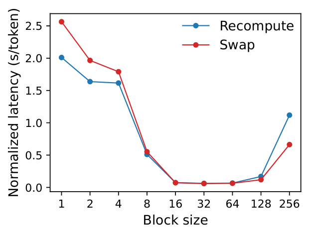
7.3 比较重计算与交换
vLLM 支持重计算和交换作为其恢复机制。为了理解两种方法之间的权衡，我们评估了它们的端到端性能并对其开销进行了微基准测试，如图所示。25. 我们的结果显示，交换在小块尺寸下会产生过高的开销。这是因为小块大小常导致CPU和GPU之间大量小数据传输，限制了有效的PCIe带宽。相比之下，重计算的开销在不同块大小间保持不变，因为重计算不使用KV块。因此，当块大小较小时，重计算更高效;而当块大小较大时，交换更高效，尽管重计算开销从不超过交换延迟的20%。对于16到64的中等块大小，这两种方法端到端性能相当。
8 讨论
将虚拟内存和分页技术应用于其他GPU工作负载。 虚拟内存和分页的理念对于管理LLM服务中的KV cache非常有效，因为工作负载需要动态内存分配（因为输出长度事先未知），其性能受限于GPU内存容量。不过，这通常并不适用于所有GPU工作负载。例如，在DNN训练中，张量形状通常是静态的，因此可以提前优化内存分配。再举一个例子，在服务非LLM的DNN时，内存效率的提升可能不会带来性能提升，因为性能主要受计算限制。在这种情况下，引入vLLM的技术可能会因为间接内存和非连续块内存的额外开销而降低性能。不过，我们很期待看到vLLM的技术被应用于其他具有类似LLM服务特性的工作负载。
虚拟内存和分页应用的专用LLM优化。vLLM 通过利用应用特定的语义，重新解释并增强了虚拟内存和分页的概念。例如，vLLM的全有或全无交换策略，利用了处理请求时要求所有对应token状态存储在GPU内存中的事实。另一个例子是重新计算以恢复被淘汰块的方法，但在操作系统中这是不可行的。此外，vLLM通过将用于内存访问操作的GPU内核与其他操作（如注意）的内核融合，减轻了分页中间接内存的开销。
9 相关工作
通用模型服务系统。 近年来，模型服务成为一个活跃的研究领域，已有众多系统被提出以应对深度学习模型部署的各个方面。Clipper、TensorFlow Serving、Nexus、InferLine 和 Clockwork 是一些早期的通用模型服务系统。他们研究batch 处理、缓存、放置和调度，以服务单一或多个模型。最近，DVABatch 引入了多项多出口batch。REEF和Shepherd提议优先服务。AlpaServe利用模型并行进行统计复用。然而，这些通用系统未能考虑LLM推断的自回归性质和token状态，导致错失优化机会。
Transformer专用的服务系统。 由于Transformer架构的重要性，已有众多专门的服务系统被开发出来。这些系统利用GPU内核优化、高级batch机制、模型并行和参数共享以实现高效的服务。其中，Orca与我们的方法最为相关。
与Orca的比较。 Orca 中的迭代级调度和 vLLM 中的 PagedAttention 是互补的技术：虽然两者都旨在提高 GPU 利用率，从而提高 LLM 服务的吞吐量，Orca 通过调度和交错请求实现，从而并行处理更多请求，而 vLLM 则通过提高内存利用率，使更多请求的工作集能够融入内存。通过减少内存碎片并启用共享，vLLM 能够并行处理更多请求，比 Orsa 快 2-4\(\times\) 。事实上，像Orca那样细粒度的调度和交织让内存管理更具挑战性，使得vLLM中提出的技术更加关键。
内存优化。 加速器计算能力与内存容量之间的差距日益扩大，导致内存成为训练和推理的瓶颈。交换、重计算及其组合已被用来降低训练峰值记忆。值得注意的是，FlexGen 研究如何在有限的 GPU 内存下交换权重和token状态以进行 LLM 推断，但它并不针对在线服务设置。OLLA优化张量的寿命和位置以减少碎片化，但不进行细粒度的块级管理或在线服务。FlashAttention应用铺砖和内核优化，以减少注意力计算的峰值内存并降低I/O成本。本文在在线服务背景下引入了块级内存管理的新思想。
10 结论
本文提出了PagedAttention，一种新的注意力算法，允许注意力键和值存储在非连续的分页内存中，并介绍了vLLM，一种高吞吐量的LLM服务系统，通过PagedAttention实现了高效的内存管理。受操作系统启发，我们展示了如何将虚拟内存和写时复制等既有技术应用于高效管理KV cache和处理LLM服务中的各种解码算法。我们的实验表明，vLLM相比最先进的系统实现了2-4\(\times\) 的吞吐量提升。
致谢
我们要感谢刘晓萱、陈志峰、黄彦平、匿名SOSP评审者以及我们的牧师周立东给予的宝贵反馈。这项研究部分得到了Andreessen Horowitz、Anyscale、Astronomer、Google、IBM、英特尔、Lacework、Microsoft、穆罕默德·本·扎耶德人工智能大学、三星SDS、Uber和VMware的捐赠支持。
\(^*\)平等贡献。↩︎
在 Transformer 中，每个token都有一组跨层的键和值向量，以及层内的注意力头。所有键和值向量可以在同一个KV块内共同管理，或者不同头和层的键值向量各自拥有独立块，并在不同的块表中管理。这两种设计在性能上没有差别，我们选择了第二种以便实现。↩︎
完整图表补充
以下图表在原 LaTeX 中由自定义宏或多子图环境生成，正文转换时未能自动嵌入，现按源文件顺序补全。
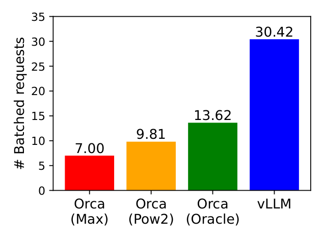

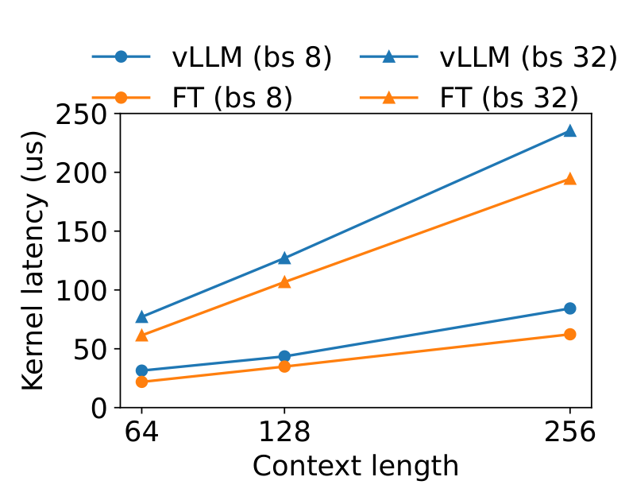

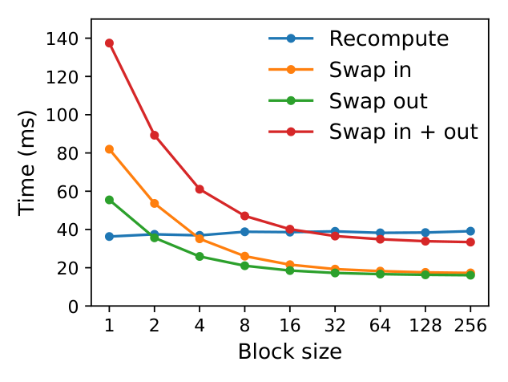

参考文献
Reza Yazdani Aminabadi, Samyam Rajbhandari, Minjia Zhang, Ammar Ahmad Awan, Cheng Li, Du Li, Elton Zheng, Jeff Rasley, Shaden Smith, Olatunji Ruwase, et al. 2022. DeepSpeed Inference: Enabling Efficient Inference of Transformer Models at Unprecedented Scale. arXiv preprint arXiv:2207.00032 (2022).
Jimmy Lei Ba, Jamie Ryan Kiros, and Geoffrey E Hinton. 2016. Layer normalization. arXiv preprint arXiv:1607.06450 (2016).
Yoshua Bengio, Réjean Ducharme, and Pascal Vincent. 2000. A neural probabilistic language model. Advances in neural information processing systems 13 (2000).
Ond rej Bojar, Rajen Chatterjee, Christian Federmann, Yvette Graham, Barry Haddow, Matthias Huck, Antonio Jimeno Yepes, Philipp Koehn, Varvara Logacheva, Christof Monz, Matteo Negri, Aurelie Neveol, Mariana Neves, Martin Popel, Matt Post, Raphael Rubino, Carolina Scarton, Lucia Specia, Marco Turchi, Karin Verspoor, and Marcos Zampieri. 2016. Findings of the 2016 Conference on Machine Translation. In Proceedings of the First Conference on Machine Translation. Association for Computational Linguistics, Berlin, Germany, 131–198. http://www.aclweb.org/anthology/W/W16/W16-2301
Tom Brown, Benjamin Mann, Nick Ryder, Melanie Subbiah, Jared D Kaplan, Prafulla Dhariwal, Arvind Neelakantan, Pranav Shyam, Girish Sastry, Amanda Askell, et al. 2020. Language models are few-shot learners. Advances in neural information processing systems 33 (2020), 1877–1901.
Mark Chen, Jerry Tworek, Heewoo Jun, Qiming Yuan, Henrique Ponde de Oliveira Pinto, Jared Kaplan, Harri Edwards, Yuri Burda, Nicholas Joseph, Greg Brockman, et al. 2021. Evaluating large language models trained on code. arXiv preprint arXiv:2107.03374 (2021).
Tianqi Chen, Bing Xu, Chiyuan Zhang, and Carlos Guestrin. 2016. Training deep nets with sublinear memory cost. arXiv preprint arXiv:1604.06174 (2016).
Wei-Lin Chiang, Zhuohan Li, Zi Lin, Ying Sheng, Zhanghao Wu, Hao Zhang, Lianmin Zheng, Siyuan Zhuang, Yonghao Zhuang, Joseph E. Gonzalez, Ion Stoica, and Eric P. Xing. 2023. Vicuna: An Open-Source Chatbot Impressing GPT-4 with 90%* ChatGPT Quality. https://lmsys.org/blog/2023-03-30-vicuna/
Aakanksha Chowdhery, Sharan Narang, Jacob Devlin, Maarten Bosma, Gaurav Mishra, Adam Roberts, Paul Barham, Hyung Won Chung, Charles Sutton, Sebastian Gehrmann, et al. 2022. Palm: Scaling language modeling with pathways. arXiv preprint arXiv:2204.02311 (2022).
Daniel Crankshaw, Gur-Eyal Sela, Xiangxi Mo, Corey Zumar, Ion Stoica, Joseph Gonzalez, and Alexey Tumanov. 2020. InferLine: latency-aware provisioning and scaling for prediction serving pipelines. In Proceedings of the 11th ACM Symposium on Cloud Computing. 477–491.
Daniel Crankshaw, Xin Wang, Guilio Zhou, Michael J Franklin, Joseph E Gonzalez, and Ion Stoica. 2017. Clipper: A Low-Latency Online Prediction Serving System. In 14th USENIX Symposium on Networked Systems Design and Implementation (NSDI 17). 613–627.
Weihao Cui, Han Zhao, Quan Chen, Hao Wei, Zirui Li, Deze Zeng, Chao Li, and Minyi Guo. 2022. DVABatch: Diversity-aware Multi-Entry Multi-Exit Batching for Efficient Processing of DNN Services on GPUs. In 2022 USENIX Annual Technical Conference (USENIX ATC 22). 183–198.
Tri Dao, Dan Fu, Stefano Ermon, Atri Rudra, and Christopher Ré. 2022. Flashattention: Fast and memory-efficient exact attention with io-awareness. Advances in Neural Information Processing Systems 35 (2022), 16344–16359.
Jiarui Fang, Yang Yu, Chengduo Zhao, and Jie Zhou. 2021. TurboTransformers: an efficient GPU serving system for transformer models. In Proceedings of the 26th ACM SIGPLAN Symposium on Principles and Practice of Parallel Programming. 389–402.
FastAPI. 2023. FastAPI. https://github.com/tiangolo/fastapi.
Pin Gao, Lingfan Yu, Yongwei Wu, and Jinyang Li. 2018. Low latency rnn inference with cellular batching. In Proceedings of the Thirteenth EuroSys Conference. 1–15.
Amir Gholami, Zhewei Yao, Sehoon Kim, Michael W Mahoney, and Kurt Keutzer. 2021. Ai and memory wall. RiseLab Medium Post 1 (2021), 6.
Github. 2022. https://github.com/features/copilot
Google. 2023. https://bard.google.com/
Arpan Gujarati, Reza Karimi, Safya Alzayat, Wei Hao, Antoine Kaufmann, Ymir Vigfusson, and Jonathan Mace. 2020. Serving \(\{\)DNNs\(\}\) like Clockwork: Performance Predictability from the Bottom Up. In 14th USENIX Symposium on Operating Systems Design and Implementation (OSDI 20). 443–462.
Mingcong Han, Hanze Zhang, Rong Chen, and Haibo Chen. 2022. Microsecond-scale Preemption for Concurrent \(\{\)GPU-accelerated\(\}\)\(\{\)DNN\(\}\) Inferences. In 16th USENIX Symposium on Operating Systems Design and Implementation (OSDI 22). 539–558.
Kaiming He, Xiangyu Zhang, Shaoqing Ren, and Jian Sun. 2016. Deep residual learning for image recognition. In Proceedings of the IEEE conference on computer vision and pattern recognition. 770–778.
Chien-Chin Huang, Gu Jin, and Jinyang Li. 2020. Swapadvisor: Pushing deep learning beyond the gpu memory limit via smart swapping. In Proceedings of the Twenty-Fifth International Conference on Architectural Support for Programming Languages and Operating Systems. 1341–1355.
Paras Jain, Ajay Jain, Aniruddha Nrusimha, Amir Gholami, Pieter Abbeel, Joseph Gonzalez, Kurt Keutzer, and Ion Stoica. 2020. Checkmate: Breaking the memory wall with optimal tensor rematerialization. Proceedings of Machine Learning and Systems 2 (2020), 497–511.
Tom Kilburn, David BG Edwards, Michael J Lanigan, and Frank H Sumner. 1962. One-level storage system. IRE Transactions on Electronic Computers 2 (1962), 223–235.
Brian Lester, Rami Al-Rfou, and Noah Constant. 2021. The power of scale for parameter-efficient prompt tuning. arXiv preprint arXiv:2104.08691 (2021).
Xiang Lisa Li and Percy Liang. 2021. Prefix-tuning: Optimizing continuous prompts for generation. arXiv preprint arXiv:2101.00190 (2021).
Zhuohan Li, Lianmin Zheng, Yinmin Zhong, Vincent Liu, Ying Sheng, Xin Jin, Yanping Huang, Zhifeng Chen, Hao Zhang, Joseph E Gonzalez, et al. 2023. AlpaServe: Statistical Multiplexing with Model Parallelism for Deep Learning Serving. arXiv preprint arXiv:2302.11665 (2023).
Lingxiao Ma, Zhiqiang Xie, Zhi Yang, Jilong Xue, Youshan Miao, Wei Cui, Wenxiang Hu, Fan Yang, Lintao Zhang, and Lidong Zhou. 2020. Rammer: Enabling holistic deep learning compiler optimizations with rtasks. In Proceedings of the 14th USENIX Conference on Operating Systems Design and Implementation. 881–897.
NVIDIA. [n. d.]. Triton Inference Server. https://developer.nvidia.com/nvidia-triton-inference-server.
NVIDIA. 2023a. FasterTransformer. https://github.com/NVIDIA/FasterTransformer.
NVIDIA. 2023b. NCCL: The NVIDIA Collective Communication Library. https://developer.nvidia.com/nccl.
Christopher Olston, Noah Fiedel, Kiril Gorovoy, Jeremiah Harmsen, Li Lao, Fangwei Li, Vinu Rajashekhar, Sukriti Ramesh, and Jordan Soyke. 2017. Tensorflow-serving: Flexible, high-performance ml serving. arXiv preprint arXiv:1712.06139 (2017).
OpenAI. 2020. https://openai.com/blog/openai-api
OpenAI. 2022. https://openai.com/blog/chatgpt
OpenAI. 2023a. https://openai.com/blog/custom-instructions-for-chatgpt
OpenAI. 2023b. GPT-4 Technical Report. arXiv:2303.08774 [cs.CL]
LMSYS ORG. 2023. Chatbot Arena Leaderboard Week 8: Introducing MT-Bench and Vicuna-33B. https://lmsys.org/blog/2023-06-22-leaderboard/.
Adam Paszke, Sam Gross, Francisco Massa, Adam Lerer, James Bradbury, Gregory Chanan, Trevor Killeen, Zeming Lin, Natalia Gimelshein, Luca Antiga, et al. 2019. Pytorch: An imperative style, high-performance deep learning library. Advances in neural information processing systems 32 (2019).
Shishir G Patil, Paras Jain, Prabal Dutta, Ion Stoica, and Joseph Gonzalez. 2022. POET: Training Neural Networks on Tiny Devices with Integrated Rematerialization and Paging. In International Conference on Machine Learning. PMLR, 17573–17583.
Reiner Pope, Sholto Douglas, Aakanksha Chowdhery, Jacob Devlin, James Bradbury, Anselm Levskaya, Jonathan Heek, Kefan Xiao, Shivani Agrawal, and Jeff Dean. 2022. Efficiently Scaling Transformer Inference. arXiv preprint arXiv:2211.05102 (2022).
Jie Ren, Samyam Rajbhandari, Reza Yazdani Aminabadi, Olatunji Ruwase, Shuangyan Yang, Minjia Zhang, Dong Li, and Yuxiong He. 2021. ZeRO-Offload: Democratizing Billion-Scale Model Training.. In USENIX Annual Technical Conference. 551–564.
Reuters. 2023. https://www.reuters.com/technology/tech-giants-ai-like-bing-bard-poses-billion-dollar-search-problem-2023-02-22/
Amazon Web Services. 2023. https://aws.amazon.com/bedrock/
Haichen Shen, Lequn Chen, Yuchen Jin, Liangyu Zhao, Bingyu Kong, Matthai Philipose, Arvind Krishnamurthy, and Ravi Sundaram. 2019. Nexus: A GPU cluster engine for accelerating DNN-based video analysis. In Proceedings of the 27th ACM Symposium on Operating Systems Principles. 322–337.
Ying Sheng, Lianmin Zheng, Binhang Yuan, Zhuohan Li, Max Ryabinin, Daniel Y Fu, Zhiqiang Xie, Beidi Chen, Clark Barrett, Joseph E Gonzalez, et al. 2023. High-throughput Generative Inference of Large Language Models with a Single GPU. arXiv preprint arXiv:2303.06865 (2023).
Mohammad Shoeybi, Mostofa Patwary, Raul Puri, Patrick LeGresley, Jared Casper, and Bryan Catanzaro. 2019. Megatron-lm: Training multi-billion parameter language models using model parallelism. arXiv preprint arXiv:1909.08053 (2019).
Benoit Steiner, Mostafa Elhoushi, Jacob Kahn, and James Hegarty. 2022. OLLA: Optimizing the Lifetime and Location of Arrays to Reduce the Memory Usage of Neural Networks. (2022). https://doi.org/10.48550/arXiv.2210.12924
Ilya Sutskever, Oriol Vinyals, and Quoc V Le. 2014. Sequence to sequence learning with neural networks. Advances in neural information processing systems 27 (2014).
Rohan Taori, Ishaan Gulrajani, Tianyi Zhang, Yann Dubois, Xuechen Li, Carlos Guestrin, Percy Liang, and Tatsunori B. Hashimoto. 2023. Stanford Alpaca: An Instruction-following LLaMA model. https://github.com/tatsu-lab/stanford_alpaca.
ShareGPT Team. 2023. https://sharegpt.com/
Hugo Touvron, Thibaut Lavril, Gautier Izacard, Xavier Martinet, Marie-Anne Lachaux, Timothée Lacroix, Baptiste Rozière, Naman Goyal, Eric Hambro, Faisal Azhar, et al. 2023. Llama: Open and efficient foundation language models. arXiv preprint arXiv:2302.13971 (2023).
Ashish Vaswani, Noam Shazeer, Niki Parmar, Jakob Uszkoreit, Llion Jones, Aidan N Gomez, Łukasz Kaiser, and Illia Polosukhin. 2017. Attention is all you need. Advances in neural information processing systems 30 (2017).
Jing Wang, Youyou Lu, Qing Wang, Minhui Xie, Keji Huang, and Jiwu Shu. 2022b. Pacman: An Efficient Compaction Approach for \(\{\)Log-Structured\(\}\)\(\{\)Key-Value\(\}\) Store on Persistent Memory. In 2022 USENIX Annual Technical Conference (USENIX ATC 22). 773–788.
Linnan Wang, Jinmian Ye, Yiyang Zhao, Wei Wu, Ang Li, Shuaiwen Leon Song, Zenglin Xu, and Tim Kraska. 2018. Superneurons: Dynamic GPU memory management for training deep neural networks. In Proceedings of the 23rd ACM SIGPLAN symposium on principles and practice of parallel programming. 41–53.
Xiaohui Wang, Ying Xiong, Yang Wei, Mingxuan Wang, and Lei Li. 2021. LightSeq: A High Performance Inference Library for Transformers. In Proceedings of the 2021 Conference of the North American Chapter of the Association for Computational Linguistics: Human Language Technologies: Industry Papers. 113–120.
Yizhong Wang, Yeganeh Kordi, Swaroop Mishra, Alisa Liu, Noah A Smith, Daniel Khashabi, and Hannaneh Hajishirzi. 2022a. Self-Instruct: Aligning Language Model with Self Generated Instructions. arXiv preprint arXiv:2212.10560 (2022).
Thomas Wolf, Lysandre Debut, Victor Sanh, Julien Chaumond, Clement Delangue, Anthony Moi, Pierric Cistac, Tim Rault, Rémi Louf, Morgan Funtowicz, et al. 2020. Transformers: State-of-the-art natural language processing. In Proceedings of the 2020 conference on empirical methods in natural language processing: system demonstrations. 38–45.
Yonghui Wu, Mike Schuster, Zhifeng Chen, Quoc V Le, Mohammad Norouzi, Wolfgang Macherey, Maxim Krikun, Yuan Cao, Qin Gao, Klaus Macherey, et al. 2016. Google’s neural machine translation system: Bridging the gap between human and machine translation. arXiv preprint arXiv:1609.08144 (2016).
Gyeong-In Yu, Joo Seong Jeong, Geon-Woo Kim, Soojeong Kim, and Byung-Gon Chun. 2022. Orca: A Distributed Serving System for \(\{\)Transformer-Based\(\}\) Generative Models. In 16th USENIX Symposium on Operating Systems Design and Implementation (OSDI 22). 521–538.
Hong Zhang, Yupeng Tang, Anurag Khandelwal, and Ion Stoica. 2023. : Serving DNNs in the Wild. In 20th USENIX Symposium on Networked Systems Design and Implementation (NSDI 23). USENIX Association, Boston, MA, 787–808. https://www.usenix.org/conference/nsdi23/presentation/zhang-hong
Susan Zhang, Stephen Roller, Naman Goyal, Mikel Artetxe, Moya Chen, Shuohui Chen, Christopher Dewan, Mona Diab, Xian Li, Xi Victoria Lin, et al. 2022. Opt: Open pre-trained transformer language models. arXiv preprint arXiv:2205.01068 (2022).
Lianmin Zheng, Zhuohan Li, Hao Zhang, Yonghao Zhuang, Zhifeng Chen, Yanping Huang, Yida Wang, Yuanzhong Xu, Danyang Zhuo, Eric P Xing, et al. 2022. Alpa: Automating Inter-and Intra-Operator Parallelism for Distributed Deep Learning. In 16th USENIX Symposium on Operating Systems Design and Implementation (OSDI 22). 559–578.
Zhe Zhou, Xuechao Wei, Jiejing Zhang, and Guangyu Sun. 2022. PetS: A Unified Framework for Parameter-Efficient Transformers Serving. In 2022 USENIX Annual Technical Conference (USENIX ATC 22). 489–504.